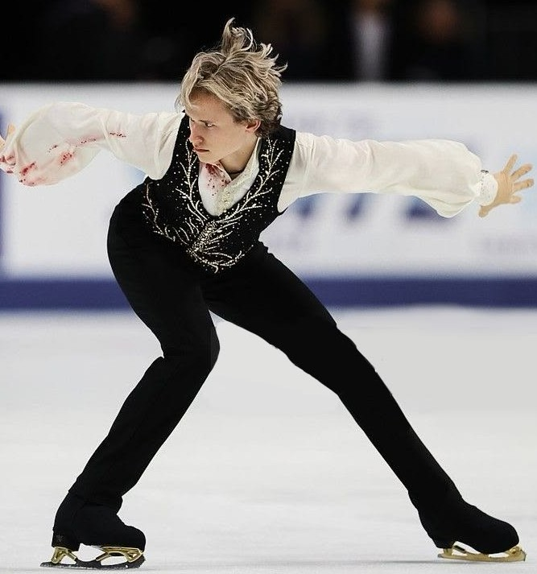
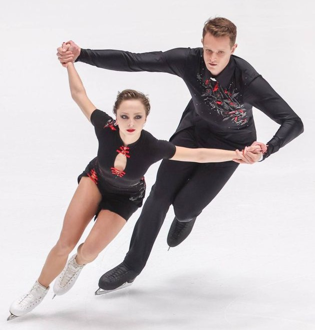
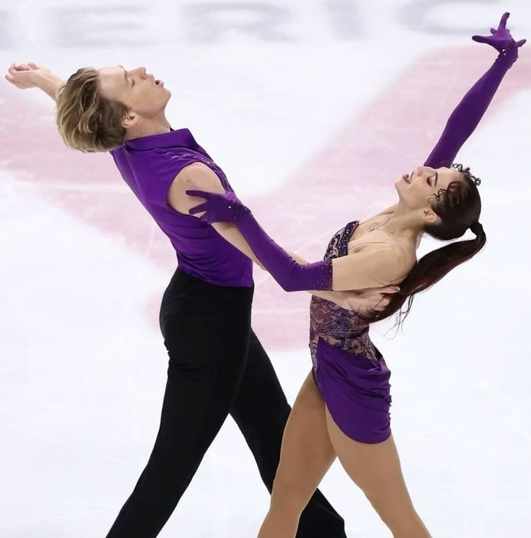
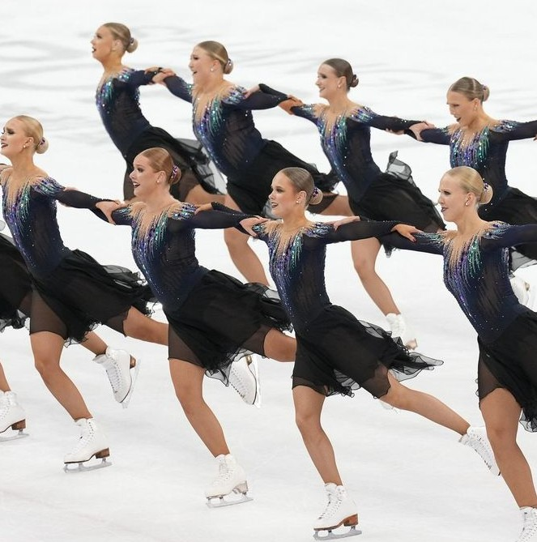

Виды фигурного катания
Одиночное катание

Одиночное катание – самая массовая и популярная дисциплина фигурного катания. Спортсмены выступают на льду отдельно друг от друга: мужчины и женщины соревнуются в разных зачётах. Фигурист должен продемонстрировать владение всеми группами элементов – прыжками, вращениями, дорожками шагов и спиралями. Оценивается не только сложность, но и качество исполнения, пластика, артистизм и связь движений с музыкой. Соревнования проходят в два этапа. В короткой программе спортсмен обязан выполнить строго определённый набор элементов, а в произвольной у него больше свободы для выбора прыжков, вращений и их комбинаций. Судьи оценивают две составляющие: технику (сложность и чистоту элементов) и компоненты программы (качество скольжения, музыкальность, хореографию).
▼
- Прыжки – основной технический элемент. Бывают одиночные, двойные, тройные и четверные. Оценивается высота, чистота приземления и сложность захода.
- Вращения – вращательные движения на одной ноге. Могут быть в разных позициях (стоя, сидя, в наклоне) и со сменой ноги.
- Дорожки шагов – последовательность шагов и поворотов по всему льду. Судьи смотрят на скорость, чистоту исполнения и разнообразие движений.
- Спирали – скольжение на одной ноге со свободной ногой, поднятой выше уровня бедра. Демонстрируют гибкость и удержание равновесия.
Парное катание

Парное катание – дисциплина, в которой на лёд выходят двое спортсменов: мужчина и женщина. Главная задача пары: создать впечатление единства действий, поэтому огромное значение имеет синхронность и чувство партнёра. Помимо традиционных элементов, которые встречаются и в одиночном катании (прыжки, шаги, вращения), здесь есть уникальные, исполняемые только вдвоём: поддержки, выбросы, подкрутки и тодесы. Эти элементы требуют не только техники, но и доверия между партнёрами. Соревнования состоят из короткой и произвольной программ. В короткой программе пары должны выполнить строго определённый набор элементов, а в произвольной у них больше свободы для выбора и комбинирования. Судьи оценивают технику исполнения (сложность, чистоту, синхронность) и компоненты программы (качество скольжения, музыкальность, хореографию и связь с музыкой).
▼
- Поддержки – партнёр поднимает партнёршу над головой и вращает. Оценивается сложность захода, позиция и уверенность.
- Выбросы – партнёр бросает партнёршу в прыжок, и она приземляется на одну ногу. Оценивается высота и приземление.
- Подкрутки – партнёр подбрасывает партнёршу вверх, она вращается, а он ловит ее до приземления.
- Тодесы – партнёр держит партнёршу за руку, и она скользит по льду в глубоком наклоне, почти касаясь льда.
- Совместные и параллельные вращения – партнёры вращаются рядом друг с другом (параллельно) или в одной связке (совместно), сохраняя идеальную синхронность.
Танцы на льду

Танцы на льду – дисциплина, в которой нет прыжков и выбросов, а главный акцент сделан на совместном исполнении танцевальных шагов. Партнёры должны постоянно находиться в контакте: им запрещено долго кататься отдельно друг от друга. Основное внимание уделяется танцевальным позициям, плавности переходов, музыкальности и точному попаданию в ритм. Большое значение имеют продуманные костюмы, которые дополняют образ и помогают передать характер танца. Соревнования включают два этапа: ритм-танец и произвольный танец. В ритм-танце пары должны исполнить обязательный набор элементов под музыку заданного ритма. В произвольном танце у спортсменов больше свободы в выборе музыки и движений. Судьи оценивают технику (шаги, твизлы, танцевальные поддержки) и компоненты программы (музыкальность, выразительность, хореографию, качество скольжения).
▼
- Твизлы – быстрое вращение на одной ноге, которое выполняется синхронно обоими партнёрами во время движения по льду.
- Дорожки шагов – сложные последовательности шагов, которые выполняются в закрытой или открытой позиции (держась за руки).
- Танцевальные поддержки – партнёр поднимает партнёршу, но не выше своей головы. В отличие от парного катания, здесь нет вращений во время поддержки.
- Хореографические элементы – специальные движения, подобранные под музыку, которые не относятся к техническим базам.
Синхронное катание

Синхронное катание – командный вид спорта, в котором на лёд одновременно выходят от 16 до 20 фигуристов (мужчины и женщины). Огромное значение здесь имеет идеальная синхронность движений и перестроений. Техника скольжения такая же, как в одиночном катании, но добавляется специфика командных элементов: пересечений, колёс, линий, блоков и кругов. Все спортсмены должны двигаться слаженно, сохраняя строй и чувствуя друг друга. Соревнования состоят из короткой и произвольной программ. В короткой команда выполняет обязательный набор элементов, а в произвольной более свободную композицию с перестроениями. Судьи оценивают технику (сложность и чистоту элементов, синхронность) и компоненты программы (качество скольжения, музыкальность, хореографию и общее впечатление). Синхронное катание пока не входит в программу Олимпийских игр, но его планируют включить в 2030 году.
▼
- Пересечение – две группы фигуристов едут навстречу друг другу на высокой скорости и пересекаются в определенных точках.
- Колесо – фигуристы выстраиваются вокруг одного центра и вращаются, образуя форму колеса.
- Линия – команда выстраивается в прямую или изогнутую линию и выполняет шаги, двигаясь как одно целое.
- Блок – фигуристы выстраиваются в плотную сетку (квадрат или прямоугольник) и движутся в идеальной синхронности.
- Круг – команда образует круг и одновременно выполняет вращения или шаги.